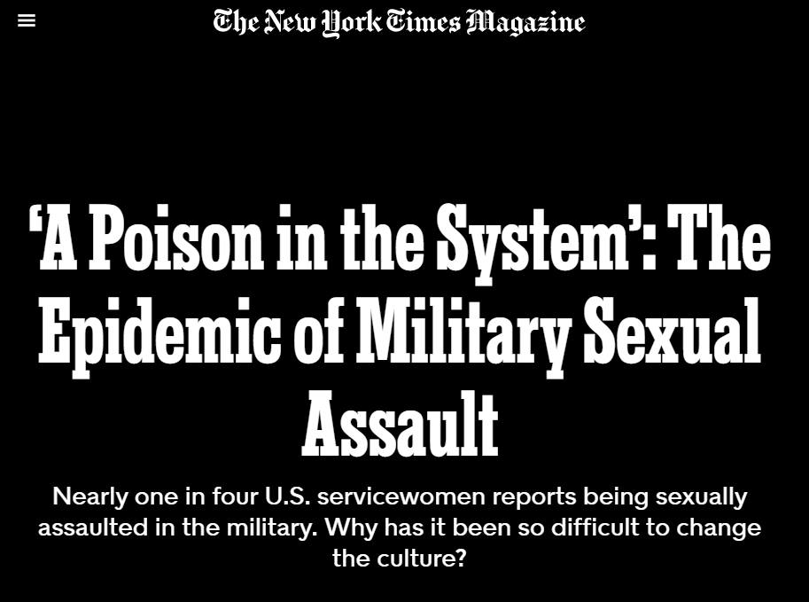

미군내 성폭력 문제에 대한 기사 발췌
게시: 2021-09-09T06:30:37+09:00

오늘은 좀 무거운 내용입니다. 이 기사는 2021년 8월 3일 뉴욕 타이즈 매거진 기사입니다. 전체 기사는 아래 link에서 보실 수 있습니다.
https://www.nytimes.com/2021/08/03/magazine/military-sexual-assault.html
‘A Poison in the System’: The Epidemic of Military Sexual Assault
Nearly one in four U.S. servicewomen reports being sexually assaulted in the military. Why has it been so difficult to change the culture?
www.nytimes.com
바쁘신 분들을 위해 주요 fact만 요약하면 아래와 같습니다. - 미군의 16.5%가 여성. 그러나 모든 미군의 자살 시도 중 31%가 여성. - 조사에 따르면 약 25%의 여성 미군이 성폭력을, 50%가 성희롱을 경험. - 그러나 많은 경우 이런 범죄 행위가 신고되어도 기소에 이르지 않고 은폐되거나 단순 징계로 넘어감. - 그 이유는 (미군에서도) 기소 여부를 독립적인 사법기관이 하지 않고 군 지휘관이 결정 - 이를 시정하고자 길리브랜드(Kirsten Gillibrand) 상원의원이 주요 군사 범죄를 지휘관이 아닌 독립적인 검사가 하도록 2013년 이후 매년 법 개정을 추진하지만, 군부의 반발로 계속 부결. 올해는 이런저런 분위기 변화로 통과를 기대한다고. - 성폭력을 경험한 미군 여성 중 현역/전역 여부를 떠나 29%가 지금도 자살 충동을 가짐. 제대 미군 여성의 자살률은 2007~2017 10년 간 73% 높아짐. - 성폭력을 신고한 미군 여성 중 38%는 신고로 인해 직무상 보복을 당했다고 답변. - 2020년 한해 동안 신고된 미군내 성폭력 사건은 6,200건. 그러나 그 중 기소되어 유죄판결까지 나오는 것은 0.8%에 불과. 이 기사는 국내 언론에서는 볼 수 없는 깊이를 가지고 있습니다. 일단 실제 피해자들을 찾아서 취재를 하고 피해 여성 군인들의 심리 상담 그룹에도 참여해서 취재를 했습니다. 일부 피해자는 실명과 함께 과거 및 현재의 자신의 사진도 제공했습니다. 전체 기사는 상당히 길고 많은 내용을 담고 있는데, 가장 많은 부분을 차지하는 쉬머고너(Shmorgoner)라는 지금은 전역한 여성 해병대원의 이야기를 발췌 번역했습니다. 해군 범죄 수사대 요원들이 증거 수집을 위해 피해자에게 가해자와 통화를 하며 범죄 사실의 시인과 사과를 받아내고 녹음하도록 코칭해주는 모습이 제게는 인상적이었습니다. 또 그럼에도 불구하고 해병대 상부가 기소를 하지 않도록 종용하는 것도 (반대 의미로) 인상적이었고요. --------------------------- 플로렌스 쉬머고너(Pfc. Florence Shmorgoner)은 2015년 어느날 오후 잠에서 깨어 자신이 다른 사람의 방 다른 사람의 침대에 있다는 사실을 깨달았다. 뭔가 잘못되었다. 당시 19세였던 쉬머고너는 병영 막사에서 친구와 비디오 게임을 하고 있었는데, 방문은 열린 채였다. 이건 그녀가 소속된 캘리포니아 주 트웬티나인 팜즈(Twentynine Palms) 기지의 규칙, 즉 남녀 해병이 같은 방에 있을 경우 문을 열어둔 상태여야 한다는 규칙을 지키기 위해서였다. 오후가 중간 정도 지난 때였지만, 어느 순간에 그녀는 그 남성 해병의 침대에서 졸기 시작했다. 그 뒤에 문이 닫혔고, 그 친구는 그녀의 몸을 더듬기 시작했다. 그녀는 유체이탈을 경험하는 것 같이 느꼈었다. 마치 무슨 일이 일어나는지 보고는 있었지만 실제로 경험하고 있는지는 않는 것 같았다. 그는 그녀의 옷을 벗기고 범했다. 나중에 그녀는 침대를 빠져나왔고 그 해병을 쳐다볼 수가 없었다. 그녀는 이렇게 기억한다. "전 그에게 말했어요. '너 내가 하고 싶어하지 않는다는 거 알고 있었쟎아.' 그리고 이건 분명히 기억해요. 그 남자도 이렇게 말했어요. '나도 알아.'" 쉬머고너는 자신의 방으로 돌아와 샤워를 하며 피부를 벗겨내듯 문질렀다. 무슨 일이 있었는지 다른 사람에게 이야기 해야겠다는 생각이 당시 그녀에겐 들지 않았고, 특별히 그러고 싶지도 않았다. 그녀는 당시 입소해있던 컴퓨터-전화 수리 요원 교육 코스에서 유일한 여성이었고, 병영 내에서 만난 몇몇 다른 여성 해병들과는 잘 어울리지 못했다. 쉬머고너에 따르면 해병대 내에서 여성 해병들은 서로에 대해 비우호적인 경쟁 관계에 있는 경우가 종종 있다고 한다. 그녀는 성폭력 이후 해병대 내에서 어떤 도움을 받을 수 있는지 전혀 알지 못했다. "트웬티나인 팜즈 기지에 있을 때 저는 피해자 상담사가 누구인지 교육받은 적이 없었어요. 제가 신고를 하고자 했어도 할 방법이 없었습니다." 쉬머고너는 심한 우울감에 빠졌다. 매주 그 가해자를 몇 번씩 마주쳤다. 같은 병영 건물 같은 체육관을 썼기 때문이다. 그는 아무 일도 없었던 것처럼 행동했다. 그녀는 그가, 혹은 다른 누가 다시 성폭행을 할까봐 겁에 질렸다. "제 방에서 식당(chow hall)으로 걸어가는 것조차 제게는 매일 단단히 마음을 먹어야 하는 일이었어요. 그건 마치 저 자신과 1대1로 앉아서 이렇게 상담하는 것 같은 일이었습니다. 자, 이제 식당에 갈 시간이야. 이제 그 많은 남자들을 지나쳐야 하니까 준비 단단히 해야 해. 그냥 눈 내리깔고 계속 걸으라고." 쉬머고너는 말했다. 곧 그녀의 공포심은 자기 혐오로 이어졌다. 매일 아침 일어날 때마다 그녀는 깨어났다는 사실에 화가 났다. 그녀는 자신이 성폭행을 당해 싸다고 믿게 되었고 자기 같은 것은 차라리 없는 편이 세상에 더 나은 일이 될 것이라고 생각했다. "자신에 대해 여성 혐오적 관점(misogynistic view)으로 묶이더라구요. 난 (남자 해병들처럼) 빠르지도 않고 강하지도 않아. 내가 미끄러져 떨어진 곳은 굉장히 이상한 토끼굴(이상한 나라의 앨리스에 나오는 토끼굴에 대한 표현)인가봐. 아마 내 잘못이었나. 어쩌면 내가 그런 대접을 해달라고 요청을 했나보지. 어쩌면 내가 나쁜 사람이고 내가 동료들에게 짐만 되는 인간인가봐. 난 그냥 없어지는 것이 더 낫겠어." 그 이후 4년간, 쉬머고너는 6번 자살을 시도했다. 아직도 그녀의 손목에는 흉터가 남아있지만 대부분은 문신으로 가렸다. 어떻게든, 그녀는 자살 시도 때마다 목숨을 잃을 정도로 깊게 베지는 않고 도중에 멈추곤 했다. "전 뭐 때문에 멈췄는지 모르겠어요. 전 항상 준비가 되어 있었고 죽는 것이 두렵지 않았거든요." 바레인, 일본, 호주, 그리고 샌디에고의 미라마(Miramar) 해병 항공대 기지에 에 컴퓨터-전화 기술병으로 배치되는 동안, 쉬머고너는 자신의 강간 사건에 대해 아무에게도 이야기하지 않고 그 고통과 트라우마를 견디어냈다. 2017년, 그녀는 역시 현역 복무 중 성폭행을 당했던 아놀드(Ecko Arnold)라는 해병을 만났다. "그 여자가 자신에 대해 제게 말해준 것은 모두 내 경험과 똑같았어요." 그녀의 친구들이 쉬머라고 부르는 쉬머고너는 마침내 폭로하기로 했다. 그녀는 아놀드에게 무슨 일이 있었는지 말했고, 아놀드는 쉬머고너에게 그 강간 사건을 신고하도록 격려했다. 쉬머고너는 처음에는 제한 리포트(restricted report)라고 불리는 것을 2017년 10월에 정식으로 제출했다. 이 종류의 리포트는 무슨 일이 있었는지에 대한 보고와 함께 카운셀링, 그리고 의료 지원을 받을 수 있게 해주지만 세부 내용은 기밀로 처리되고 수사도 진행되지 않는다. 1달 뒤, 그녀는 비제한 리포트(unrestricted report)를 제출했고 그로 인해 수사가 시작되었다. 수사를 시작한 해군 범죄 수사대(Naval Criminal Investigative Service - N.C.I.S.)에게 쉬머고너는 몇 번이고 반복해서 그 고통스러운 기억을, 그날 오후의 일을 기억나는 대로 상세히 이야기했다. 그 시점에 가해자는 하와이 기지에 배치되어 있었는데 해군 수사대는 쉬머고너가 가해자에게 전화를 하여 강간 사실을 자백하는지 녹음을 할 수 있도록 조치를 취했다. 수사요원은 쉬머고너에게 무슨 말을 어떻게 해야 하는지에 대해 코칭을 해주었다. 그 성폭행 이후, 가해자와 이렇게 길게 이야기하는 것은 처음 있는 일이었고 그녀는 겁에 질렸다. "제 일생에서 가장 어려운 일이었어요." 쉬머고너는 그냥 아무렇지도 않다는 듯이 통화를 시작했고, 하와이와 그 가해자의 보직에 대해 물었다. 그러다가 대화를 그 성폭행 사건으로 이끌었다. "저는 그 남자에게 이렇게 이야기 했어요. 이봐, 그거 내게는 정말 큰 상처를 주었어. 난 원하지 않았고 우리는 사귀는 관계도 아니었어." 그녀는 말을 이었다. "그 남자는 결국 사과하면서 미안하다고 말했어요." 같은 방에 있던 해군 수사요원은 그녀에게 필요한 것을 얻어냈다는 손 신호를 보냈고 그녀는 무사히 통화를 마칠 수 있었다. 그 시점에서, 녹음된 자백을 손에 쥐고 있었으니 쉬머고너는 그 사건이 깨끗이 마무리될 거라고 생각했다. 하지만 그녀의 어안이 벙벙하게도, 해병대 지휘관과 해군 수사대는 군법회의까지 가지 않는 것이 좋겠다고 권고했다. 그들이 쉬머고너에게 말한 것에 따르면 자백에도 불구하고 그 가해자의 평소 품행에 대해 좋게 말하는 증언들이 많고, 또 강간이 일어났다는 물적 증거가 없기 때문이었다. 그들은 쉬머고너에게 군법회의는 그녀에게도 무척 힘들 것이고 어차피 유죄 평결로 끝날 것 같지가 않으므로 그녀 자신도 군법회의를 원하지는 않을 것이라고 경고를 주었다. (해군 범죄 수사대는 이 기사에 대해 코멘트를 거부했고 모든 질문은 해병대 사령부로 미루었다. 해병대 사령부에서는 해군 범죄 수사대가 그 사건을 수사한 것과 지휘관이 군법회의 회부를 권고하지 않은 것은 확인해주었지만 녹음된 자백이 있는지에 대해서는 확인해주지 않았다. 쉬머고너는 가해자의 이름은 밝히기를 거부했으므로 타임즈지(The Times)는 가해자의 코멘트는 얻지 못했다.) 쉬머고너는 마음이 찢어지는 듯 했고 혼란스러웠으나 결국 군법회의에 가지 않는 것에 동의했다. 그녀는 가해자에게 면죄부를 주는 결과를 위해 고통스러운 재판을 감내하고 싶지는 않았다. 게다가 그녀는 아놀드가 자신의 성폭행에 대해 신고하고 전출된 뒤에 무슨 일이 생겼는지를 알고 있었다. 쉬머고너는 이렇게 말했다. "아놀드는 성폭행을 당했는데, 사람들은 그 여자에 대해 끔찍한 이야기를 수군거렸어요." 그녀가 기억하기로는 한 남성 동료는 아놀드에게 '넌 그런 일을 당해도 싸다'고 말했다. 그 뒤에 쉬머고너는 해군 수사대에 당국이 최소한 그 가해자에게 어떤 행정 제재라도 가할 수 있는지를 물었다. 그에 대한 대답도 안된다는 것이었다. 강간 사건 수사는 2018년에 종결되었고 쉬머고너는 그 가해자가 해병대와의 복무 계약을 채우고 명예제대했다고 말했다. 그녀는 더욱 깊은 우울감과 절망에 빠졌다. "해병대에 대한 내 관점은 이후 정말로 바뀌었어요. 그 구성원을 정말 돌보지 않는 기관이라는 것으로요. 사람을 돌보는 것이 아니라, 사람을 이용만 해먹는 거에요."
(...이하 생략)